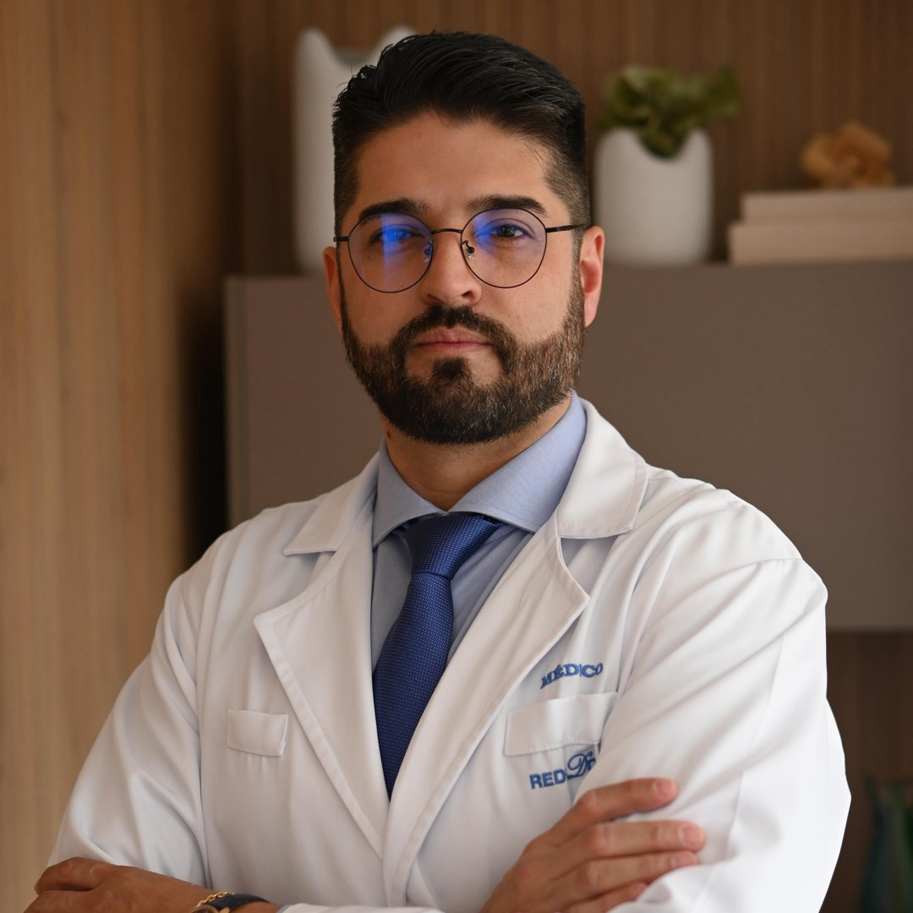
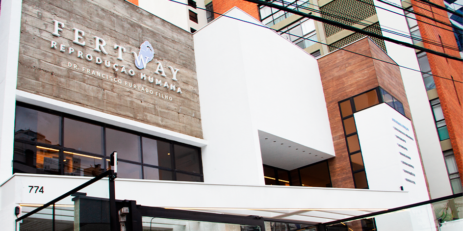

Dr. Renan Dagostin
Cuidado ginecológico especializado com abordagem moderna, ética e individualizada.
Atendimento em ginecologia, cirurgia ginecológica minimamente invasiva e cirurgia robótica, com foco em segurança, acolhimento e avaliação personalizada.

Sobre o Dr. Renan Dagostin
Dr. Renan Dagostin é médico ginecologista, com atuação em ginecologia, cirurgia ginecológica avançada, cirurgia minimamente invasiva e cirurgia robótica.
Seu atendimento é voltado à avaliação individualizada da saúde da mulher, com foco em diagnóstico cuidadoso, orientação clara e definição da melhor conduta para cada paciente. Preza por uma abordagem humana, ética e acolhedora, compreendendo que cada caso exige uma avaliação médica minuciosa e personalizada.
Formação e trajetória
- Medicina pela Pontifícia Universidade Católica do Paraná.
- Residência médica em Ginecologia e Obstetrícia pelo Hospital Nossa Senhora das Graças / Mater Dei.
- Fellowship em Cirurgia Ginecológica Minimamente Invasiva pelo Hospital Nossa Senhora das Graças.
- Atuação focada em cirurgia ginecológica e cirurgia robótica.
Áreas de atuação
Atendimento especializado em condições ginecológicas que exigem avaliação cuidadosa, planejamento terapêutico e acompanhamento individualizado.
Cirurgia Ginecológica
Avaliação e acompanhamento de condições ginecológicas que podem necessitar de tratamento cirúrgico, sempre com indicação individualizada.
Agendar consultaCirurgia Minimamente Invasiva
Abordagem cirúrgica voltada a técnicas menos invasivas, quando indicadas, buscando recuperação adequada e segurança no cuidado.
Agendar consultaCirurgia Robótica
Tecnologia aplicada à cirurgia ginecológica em casos selecionados, conforme avaliação médica e indicação clínica.
Agendar consultaEndometriose
Avaliação de sintomas como dor pélvica, cólicas intensas, dor nas relações e impacto na qualidade de vida.
Agendar consultaAdenomiose
Investigação e acompanhamento de alterações uterinas associadas a dor, sangramento aumentado e desconforto pélvico.
Agendar consultaMiomas Uterinos
Avaliação de miomas, sangramento uterino aumentado, dor pélvica e definição da melhor conduta para cada caso.
Agendar consultaCistos Ovarianos
Acompanhamento e investigação de alterações ovarianas, considerando sintomas, exames de imagem e contexto clínico.
Agendar consultaDor Pélvica
Avaliação médica especializada para identificar possíveis causas ginecológicas e orientar o tratamento adequado.
Agendar consultaServiços
Atendimento focado em acolhimento, diagnóstico preciso e plano de cuidado individualizado para a saúde da mulher.
Consulta Ginecológica
Avaliação clínica individualizada, com escuta atenta, exame físico detalhado quando indicado e orientação personalizada.
Avaliação para Cirurgia
Análise aprofundada do quadro clínico, exames e possibilidades terapêuticas para definir de forma segura a melhor conduta cirúrgica.
Teleconsulta
Atendimento remoto para orientações preliminares, retorno de exames e acompanhamento, quando clinicamente apropriado.
Acompanhamento Clínico
Seguimento rigoroso de condições ginecológicas crônicas ou que exigem monitoramento e cuidado contínuo da saúde íntima.
Orientação Preventiva
Informações e diretrizes sobre prevenção, rastreamento de doenças, saúde íntima e cuidados ginecológicos essenciais.
Segunda Opinião Médica
Avaliação técnica de casos já investigados ou com indicação de procedimento prévia, auxiliando na clareza e segurança das decisões.
Quando procurar avaliação ginecológica?
Alguns sintomas merecem atenção especializada e devem ser avaliados por um médico ginecologista, especialmente quando são persistentes, recorrentes ou interferem diretamente na sua qualidade de vida.
A avaliação médica é essencial para compreender o quadro clínico, definir o diagnóstico correto e indicar a conduta terapêutica mais adequada e segura para cada paciente.
Agendar consulta pelo WhatsApp
Locais de atendimento
Consultórios localizados em pontos estratégicos de Curitiba, com infraestrutura completa para seu conforto e segurança.
Fertway — Reprodução Humana
Rua Benjamin Lins, 774
Batel, Curitiba — PR
CEP: 80420-100
Clínica Dagostin
Cirurgia Ginecológica Avançada e Bem Estar
Avenida República Argentina
Água Verde, Curitiba — PR
CEP: 80620-010
Agende sua consulta
Para agendar uma avaliação, confirmar disponibilidade de horários ou obter mais informações sobre os atendimentos, clique no botão abaixo e fale com a nossa equipe diretamente pelo WhatsApp.
Agendar pelo WhatsAppAcompanhe no Instagram
Veja os posts publicados no perfil do Dr. Renan Dagostin diretamente do Instagram.